Assembly
SERVICE NOTESDo not allow dirt, grease, or foreign material to enter the case or transmission components during assembly. Keep the transmission case and components clean. Also make sure the tools and workbench area used for assembly operations are equally clean.
Shop towels used for wiping off tools and hands must be made from lint free material. Lint will stick to transmission parts and could interfere with valve operation, or even restrict fluid passages.
Lubricate the transmission components with MOPAR transmission fluid during reassembly. Use MOPAR Door Ease, or Ru-Glyde on seals and O-rings to ease installation.
Petroleum jelly can also be used to hold thrust washers, thrust plates and gaskets in position during assembly. However, do not use chassis grease, bearing grease, white grease, or similar lubricants on any transmission part. These types of lubricants can eventually block or restrict fluid passages and interfere with valve operation. Use petroleum jelly only.
Do not force parts into place. The transmission components and subassemblies are easily installed by hand when properly aligned.
If a part seems extremely difficult to install, it is either misaligned or incorrectly assembled. Also verify that thrust washers, thrust plates and seal rings are correctly positioned before assembly. These parts can interfere with proper assembly if mix-positioned.
The planetary gear-train, front/rear clutch assemblies and oil pump are all much easier to install when the transmission case is upright.
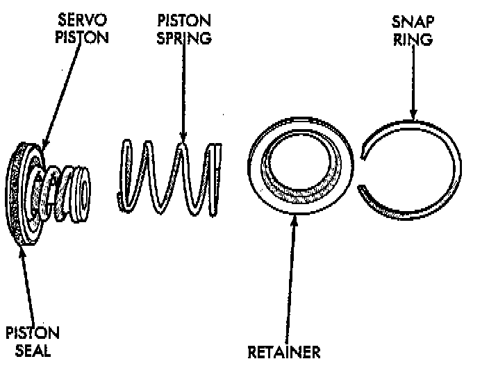
PROCEDURE
1. Install rear servo piston, spring and retainer. Install spring on top of servo piston and install retainer on top of spring.
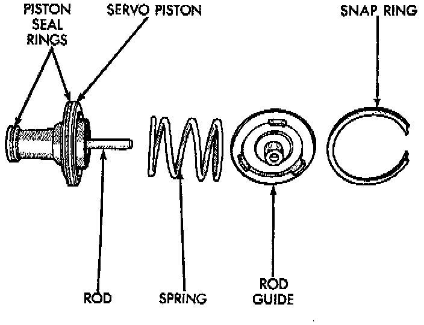
2. Install front servo piston assembly, servo spring and rod guide.
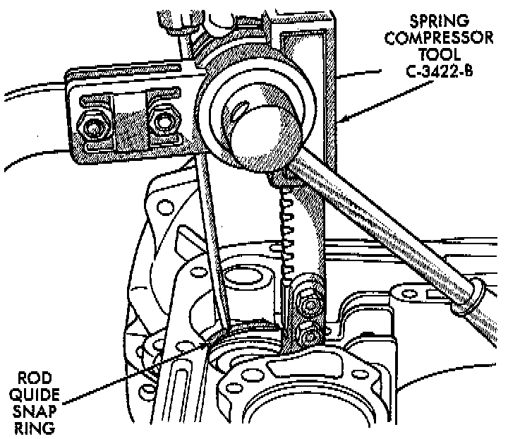
3. Compress front/rear servo springs with Valve Spring Compressor C-3422-B, or equivalent and install each servo snap ring.
4. Lubricate clutch cam rollers with transmission fluid.
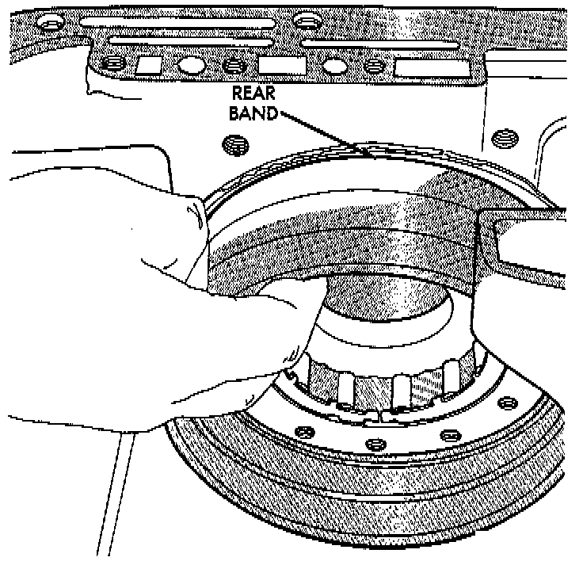
5. Install rear band in case. Be sure twin lugs on band are seated against reaction pin.
6. Install low-reverse drum and check overrunning clutch operation as follows:
a. Lubricate overrunning clutch race (on drum hub) with transmission fluid.
b. Guide drum through rear band.
c. Tilt drum slightly and start race (on drum hub) into overrunning clutch rollers.
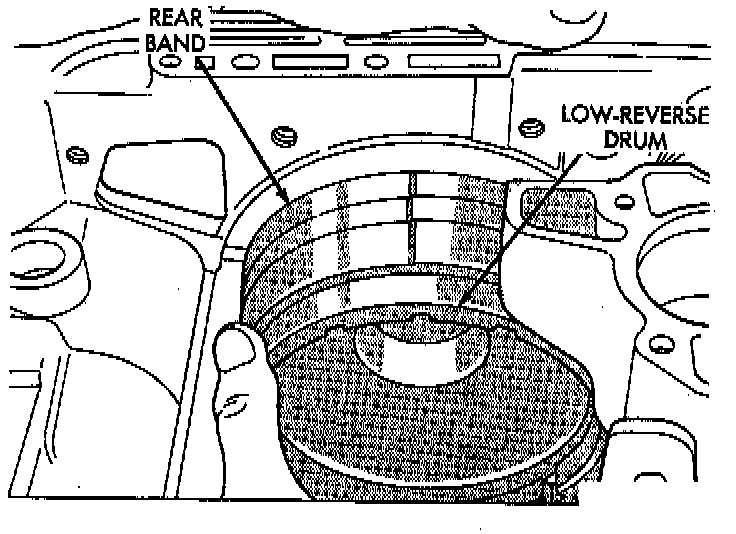
d. Press drum rearward and turn it in clockwise direction until drum seats in overrunning clutch.
e. Turn drum back and forth. Drum should rotate freely in clockwise direction and lock in counterclockwise direction (as viewed from front of case).
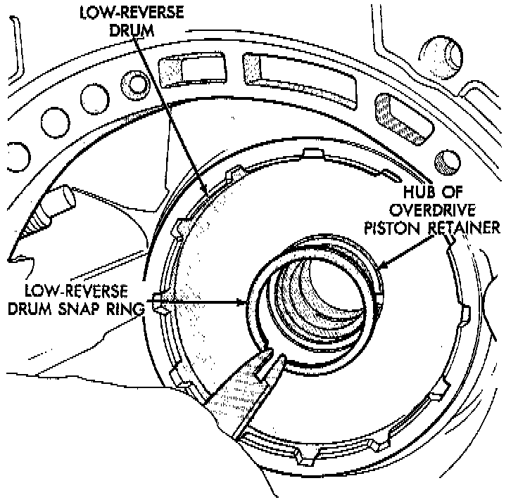
7. Install snap ring that secures low-reverse drum to hub of overdrive piston retainer.
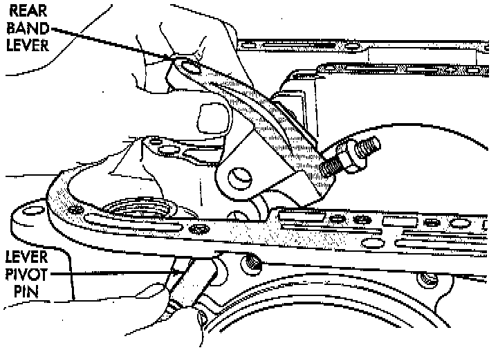
8. Install rear band lever and pivot pin. Align lever with pin bores in case and push pivot pin into place.
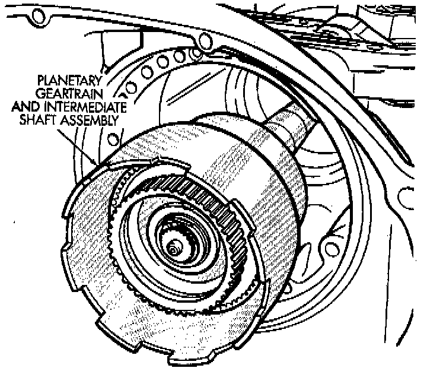
9. Install planetary gear-train assembly.
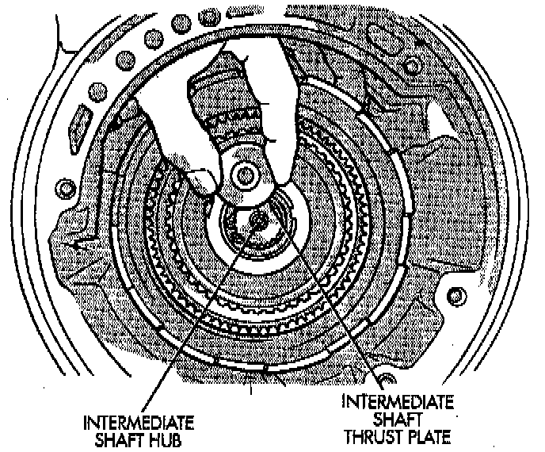
10. Install thrust plate on intermediate shaft hub. Use petroleum jelly to hold thrust plate in place.
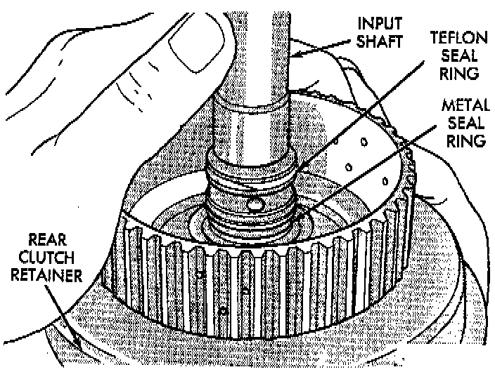
11. Check seal ring on rear clutch retainer hub and seal rings on input shaft. Also verify that shaft seal rings are installed in sequence shown.
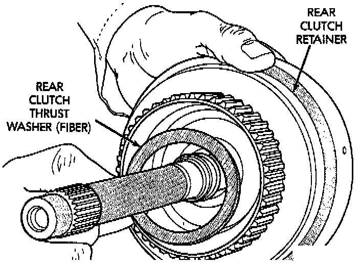
12. Install rear clutch thrust washer. Use additional petroleum jelly to hold washer in place if necessary.
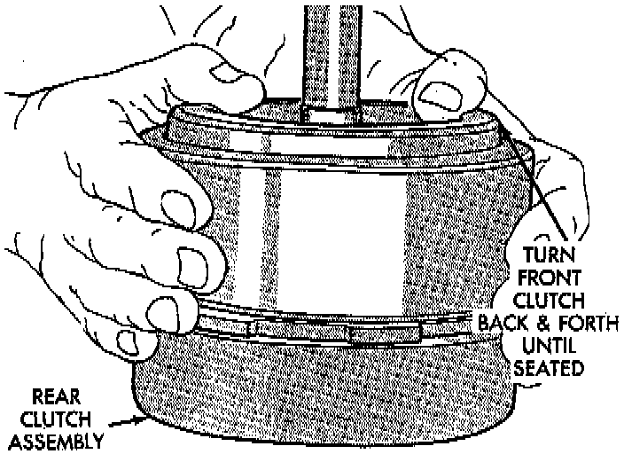
13. Align clutch discs in front clutch and install front clutch on rear clutch. Rotate front clutch retainer back and forth until completely seated on rear clutch retainer.
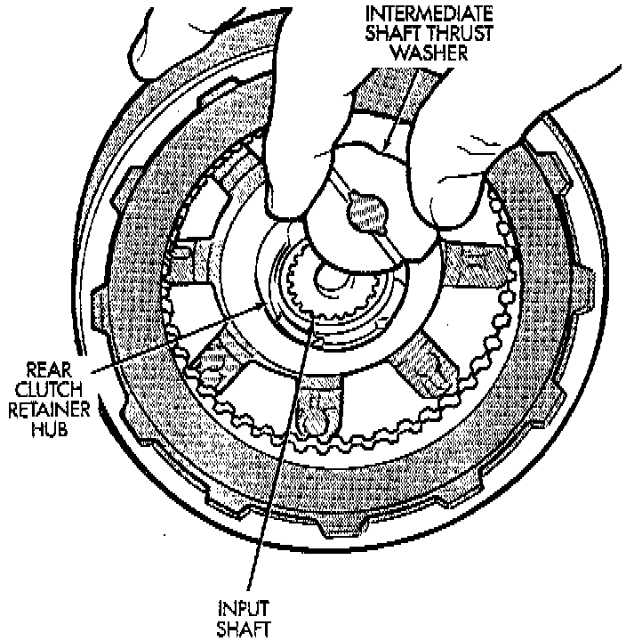
14. Coat intermediate shaft thrust washer with petroleum jelly. Then install washer in rear clutch hub. Use enough petroleum jelly to hold washer in place. Be sure grooved side of washer faces rearward (toward output shaft) as shown. Also note that washer only fits one way in clutch hub. Note thickness of this washer. It is a select fit part and is used to control transmission end play.
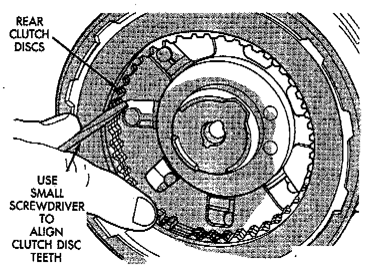
15. Align drive teeth on rear clutch discs with small screwdriver. This makes installation on front planetary easier.
16. Raise front end of transmission upward as far as possible and support case with wood blocks. Front/rear clutch and oil pump assemblies are easier to install if transmission is as close to upright position as possible.
17. Slide front band into case.
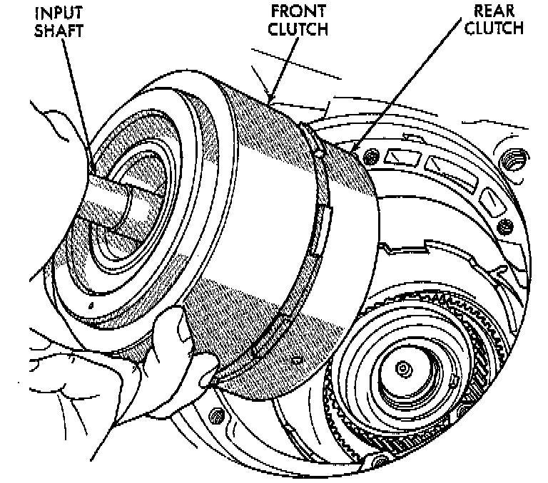
18. Install front and rear clutch units as assembly. Align rear clutch with front annulus gear and install assembly in driving shell. Be sure output shaft thrust washer and thrust plate are not displaced during installation.
19. Carefully work assembled clutches back and forth to engage and seat rear clutch discs on front annulus gear. Also be sure front clutch drive lugs are fully engaged in slots of driving shell after installation.
20. Assemble front band strut.
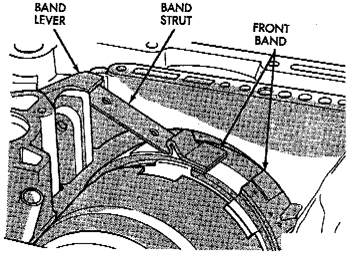
21. Install front band adjuster, strut and adjusting screw.
22. Tighten band adjusting screw until band just grips clutch retainer. Verify that front/rear clutches are still seated before continuing.
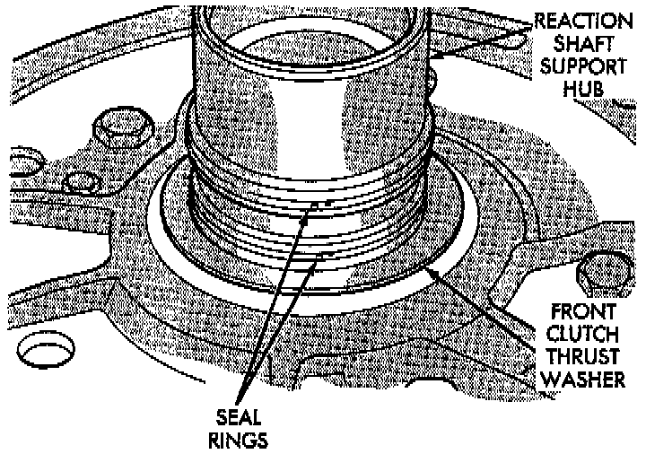
23. Check seal rings on reaction shaft support hub. Verify that seal rings are hooked together and that front clutch thrust washer is properly positioned. Use petroleum jelly to hold thrust washer in place if necessary.
24. Lubricate oil pump body seal with petroleum jelly. Lubricate pump shaft seal lip with petroleum jelly.
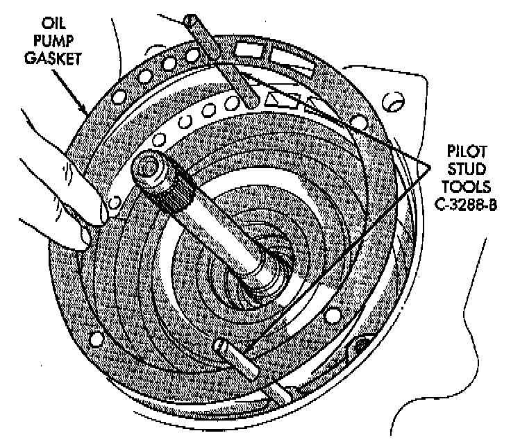
25. Thread two Pilot Stud Tools C-3288-B, or equivalent into bolt holes in oil pump bore flange.
26. Align and install oil numb Basket.
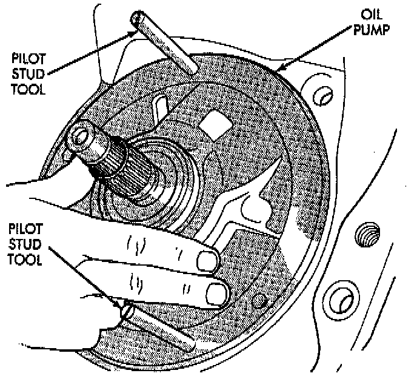
27. Install oil pump. Align and position pump on pilot studs. Slide pump down studs and work it into front clutch hub and case by hand. Then install 2 or 3 pump bolts to hold pump in place.
28. Remove pilot stud tools and install remaining oil pump bolts. Tighten bolts alternately in diagonal pattern to 20 Nm (15 ft. lbs.).
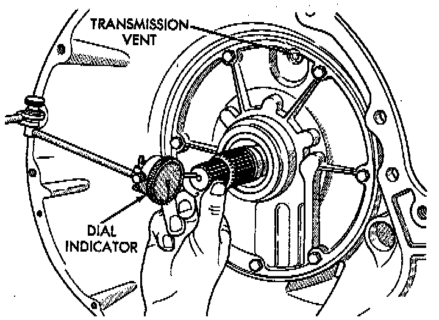
29. Measure and if necessary, correct input shaft end play as follows:
a. Attach dial indicator to converter housing.
b. Position indicator plunger against input shaft and zero indicator.
c. Move input shaft in and out and record reading. End play should be 0.56 - 2.31 mm (0.022 - 0.091 inch). Proceed to next step if end play is not within specified limits.
d. Intermediate shaft thrust washer (in hub of rear clutch retainer) controls end play. Washer is a select fit part and can be changed to adjust end play. If end play turns out to be incorrect, remove oil pump, and clutches. Then install thinner/ thicker thrust washer as necessary.
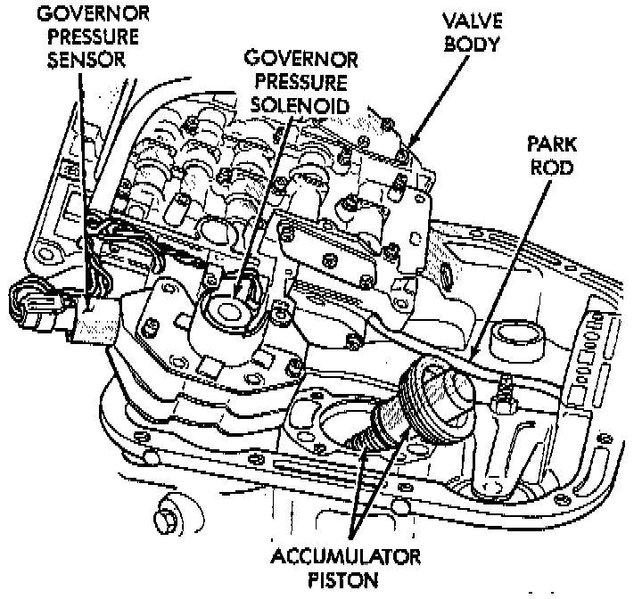
30. Install accumulator piston and inner and outer springs.
31. Verify that valve body solenoid harness is secured in 3-4 accumulator housing cover plate.
32. Install valve body as follows:
a. Align and carefully insert park rod into pawl. Rod will make click noise as it enters pawl. Move rod slightly to check engagement.
b. Align and seat valve body on case. Be sure manual lever shaft and overdrive connector are fully seated in case. Also be sure valve body wiring is not pinched or kinked.
c. Install and start all valve body attaching bolts by hand. Then tighten bolts evenly, in a diagonal pattern to 12 Nm (105 inch lbs.) torque. Do not overtighten valve body bolts. This could result in distortion and cross leakage after installation.
CAUTION: It is possible for the park rod to displace into a cavity just above the pawl sprag during installation. Make sure the rod is actually engaged in the pawl and has not displaced into the cavity.
33. Install new filter on valve body. Tighten filter screws to 4 Nm (35 inch lbs.).
34. Adjust front and rear bands.
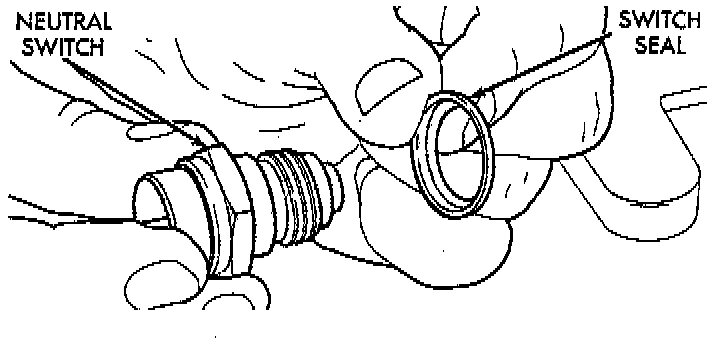
35. Install seal on [1][2]park/neutral position switch. Then install and tighten switch to 34 Nm (25 ft. lbs.).
36. Install magnet in oil pan. Magnet goes on small protrusion at corner of pan.
37. Position new oil pan gasket on case and install oil pan. Tighten pan bolts to 17 Nm (13 ft. lbs.).
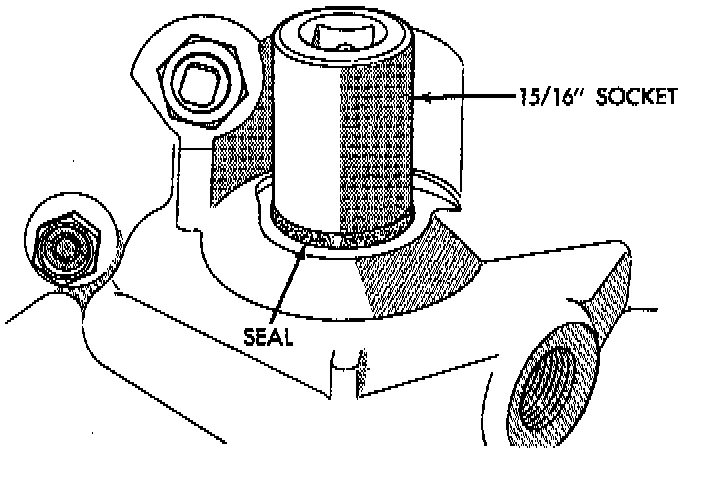
38. Install new valve body manual shaft seal in case. Lubricate seal lip and manual shaft with petroleum jelly. Start seal over shaft and into case. Seat seal with 15/16 inch, deep well socket.
39. Install throttle valve and shift selector levers on valve body manual lever shaft.
40. Cap or cover transmission openings (cooler line fittings, filler tube bore, etc.) to prevent dirt entry.
41. Install torque converter. Use C-clamp or metal strap to hold converter in place for installation.